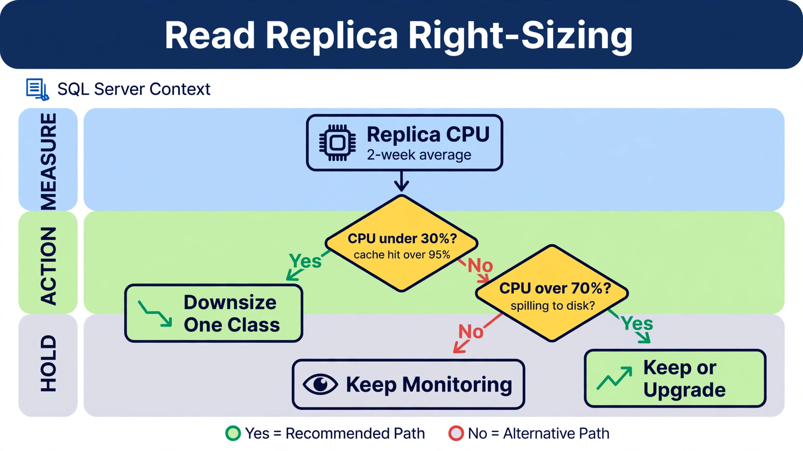

Chapter 19: Read Replica Economics: When They Pay Off vs Waste Money
Read replicas are one of the most misunderstood line items on a cloud database bill. Teams spin them up to offload reporting queries, achieve "high availability," or simply because the architecture diagram called for them — and then forget they exist. A single idle db.r6i.2xlarge RDS for SQL Server readable standby in us-east-1 runs approximately $1,898/month on on-demand license-included pricing (illustrative — verify current pricing). Multiply that across three environments and two regions, and you are paying over $136,000/year for instances that may be serving fewer than a dozen queries per hour. This chapter covers how to measure whether your read replicas are actually earning their keep, how to calculate the break-even point where adding a replica saves money versus costs more, and how to automate the decisions that most teams currently make by gut feel. Teams that apply the frameworks here typically reclaim 30–60% of their read replica spend within 90 days.
---
19.1 Understanding the True Cost of a Read Replica
Before optimizing, you need to understand what you are actually paying for. A read replica is not just the compute cost of the instance itself. The total cost of ownership for a read replica has four components:
1. Compute — The instance hourly rate, which mirrors the primary instance class unless you explicitly downsize.
2. Storage — In AWS RDS for SQL Server, a replica is a separate instance with its own allocated storage, billed at the same rate as the primary. A 2TB gp3 primary with a replica means you are paying for 4TB of storage. In Azure SQL, a geo-replica is a separate database with its own storage billing; active geo-replication doubles the storage charge for the replicated database.
3. Data Transfer — Replication traffic within the same Availability Zone is free. Cross-AZ replication incurs $0.01/GB in AWS. Cross-region replication is billed at standard data transfer rates, typically $0.02–$0.09/GB depending on the source region. A primary writing 500GB/day of transaction log records to a cross-region replica costs between $300–$1,350/month in transfer fees alone before you have run a single query.
4. I/O — On RDS gp2 and io1 storage, replicas consume read IOPS that are billed separately. On gp3, IOPS are provisioned per instance, so each replica needs its own provisioned IOPS allocation if read throughput is high.
Here is a concrete comparison of the same workload across instance types to illustrate how quickly costs diverge:
| Configuration | Instance | On-Demand/mo | 1-yr RI/mo | Savings |
|---|---|---|---|---|
| Single primary, no replica | db.r6i.2xlarge | $1,898 | $1,196 | — |
| Primary + 1 same-AZ replica | db.r6i.2xlarge × 2 | $3,796 | $2,392 | RI saves $1,404/mo |
| Primary + 1 cross-region replica | db.r6i.2xlarge × 2 + transfer | ~$4,096 | ~$2,692 | Transfer adds ~$300/mo |
| Primary + 1 Azure SQL geo-replica | 8 vCore Gen5 × 2 | $1,752 | $1,106 | Geo-replica billed as a second database |
The storage multiplication becomes significant at scale. A 5TB RDS for SQL Server primary with two replicas bills for 15TB of gp3 storage at $0.115/GB-month = $1,725/month just in storage. Unlike engines with shared-storage clusters, SQL Server replicas each carry a full copy of the data, so storage cost scales linearly with replica count. Rates shown are illustrative—verify current pricing for your region and edition.
Use these queries on SQL Server to understand your current replication topology before making any cost decisions:
-- Inventory Always On availability group replica state (SQL Server)
-- Run on the primary replica
SELECT
ag.name AS ag_name,
ar.replica_server_name,
ars.role_desc AS replica_role,
ars.connected_state_desc,
ars.synchronization_health_desc,
drs.database_id,
DB_NAME(drs.database_id) AS database_name,
drs.synchronization_state_desc,
drs.log_send_queue_size AS log_send_queue_kb,
drs.log_send_rate,
drs.redo_queue_size AS redo_queue_kb,
drs.redo_rate,
drs.secondary_lag_seconds
FROM sys.dm_hadr_database_replica_states drs
JOIN sys.dm_hadr_availability_replica_states ars
ON drs.replica_id = ars.replica_id
AND drs.group_id = ars.group_id
JOIN sys.availability_replicas ar
ON ar.replica_id = ars.replica_id
JOIN sys.availability_groups ag
ON ag.group_id = ar.group_id
ORDER BY drs.secondary_lag_seconds DESC;
-- Azure SQL: check geo-replication link state and lag
SELECT
partner_server,
partner_database,
replication_state_desc,
role_desc,
secondary_allow_connections_desc,
last_replication_update
FROM sys.geo_replication_links;For Azure SQL, use the equivalent DMV approach to assess replica utilization:
-- Azure SQL: Check replica utilization and query load
-- Run on secondary/geo-replica
SELECT
database_name = DB_NAME(),
is_read_committed_snapshot_isolation_on =
CASE WHEN is_read_committed_snapshot_on = 1 THEN 'YES' ELSE 'NO' END,
is_secondary = CASE WHEN database_id > 0 THEN 'YES' ELSE 'NO' END
FROM sys.databases
WHERE name = DB_NAME();
-- Query execution stats on the replica
SELECT TOP 25
qs.execution_count,
qs.total_elapsed_time / 1000 AS total_elapsed_ms,
qs.total_elapsed_time / qs.execution_count / 1000 AS avg_elapsed_ms,
qs.total_logical_reads,
qs.total_logical_reads / qs.execution_count AS avg_logical_reads,
SUBSTRING(qt.text, (qs.statement_start_offset / 2) + 1,
((CASE qs.statement_end_offset
WHEN -1 THEN DATALENGTH(qt.text)
ELSE qs.statement_end_offset
END - qs.statement_start_offset) / 2) + 1) AS query_text
FROM sys.dm_exec_query_stats qs
CROSS APPLY sys.dm_exec_sql_text(qs.sql_handle) qt
WHERE qs.last_execution_time > DATEADD(HOUR, -1, GETUTCDATE())
ORDER BY qs.total_elapsed_time DESC;
-- Active connections on this secondary
SELECT
COUNT(*) AS total_connections,
SUM(CASE WHEN status = 'running' THEN 1 ELSE 0 END) AS running,
SUM(CASE WHEN status = 'sleeping' THEN 1 ELSE 0 END) AS sleeping,
SUM(CASE WHEN status = 'background' THEN 1 ELSE 0 END) AS background
FROM sys.sysprocesses;---
19.2 Diagnosing Replica Utilization: Are They Actually Working?
The most common waste pattern in read replica deployments is the replica that nobody reads. It was provisioned for a reporting use case that was later moved to a data warehouse, or the application connection string was never updated to point read traffic at the replica endpoint.
The following script pulls CloudWatch metrics for all RDS instances and calculates a utilization score that identifies idle replicas:
#!/bin/bash
# replica-utilization-audit.sh
# Pulls 7-day average metrics for all RDS replicas and flags low-utilization instances
# Schedule: Run weekly via CloudWatch Events or cron
AWS_REGION="${AWS_REGION:-us-east-1}"
OUTPUT_FILE="replica_audit_$(date +%Y%m%d).csv"
DAYS_BACK=7
START_TIME=$(date -u -d "${DAYS_BACK} days ago" +%Y-%m-%dT%H:%M:%SZ 2>/dev/null || \
date -u -v-${DAYS_BACK}d +%Y-%m-%dT%H:%M:%SZ)
END_TIME=$(date -u +%Y-%m-%dT%H:%M:%SZ)
echo "InstanceId,DBInstanceClass,ReplicationRole,AvgReadIOPS,AvgConnections,AvgCPU,ReplicaLag,MonthlyCostEstimate,UtilizationFlag" > "$OUTPUT_FILE"
# Get all RDS instances
INSTANCES=$(aws rds describe-db-instances \
--region "$AWS_REGION" \
--query 'DBInstances[*].[DBInstanceIdentifier,DBInstanceClass,ReadReplicaSourceDBInstanceIdentifier,MultiAZ]' \
--output text)
while IFS=$'\t' read -r instance_id instance_class source_instance multi_az; do
# Determine if this is a replica
if [ -n "$source_instance" ] && [ "$source_instance" != "None" ]; then
role="READ_REPLICA"
else
role="PRIMARY"
fi
# Only analyze replicas for this audit
if [ "$role" != "READ_REPLICA" ]; then
continue
fi
echo "Analyzing replica: $instance_id ($instance_class)"
# Read IOPS (primary utilization signal for read replicas)
AVG_READ_IOPS=$(aws cloudwatch get-metric-statistics \
--region "$AWS_REGION" \
--namespace "AWS/RDS" \
--metric-name "ReadIOPS" \
--dimensions Name=DBInstanceIdentifier,Value="$instance_id" \
--start-time "$START_TIME" \
--end-time "$END_TIME" \
--period $((DAYS_BACK * 86400)) \
--statistics Average \
--query 'Datapoints[0].Average' \
--output text 2>/dev/null || echo "0")
# Database connections
AVG_CONNECTIONS=$(aws cloudwatch get-metric-statistics \
--region "$AWS_REGION" \
--namespace "AWS/RDS" \
--metric-name "DatabaseConnections" \
--dimensions Name=DBInstanceIdentifier,Value="$instance_id" \
--start-time "$START_TIME" \
--end-time "$END_TIME" \
--period $((DAYS_BACK * 86400)) \
--statistics Average \
--query 'Datapoints[0].Average' \
--output text 2>/dev/null || echo "0")
# CPU utilization
AVG_CPU=$(aws cloudwatch get-metric-statistics \
--region "$AWS_REGION" \
--namespace "AWS/RDS" \
--metric-name "CPUUtilization" \
--dimensions Name=DBInstanceIdentifier,Value="$instance_id" \
--start-time "$START_TIME" \
--end-time "$END_TIME" \
--period $((DAYS_BACK * 86400)) \
--statistics Average \
--query 'Datapoints[0].Average' \
--output text 2>/dev/null || echo "0")
# Replica lag
REPLICA_LAG=$(aws cloudwatch get-metric-statistics \
--region "$AWS_REGION" \
--namespace "AWS/RDS" \
--metric-name "ReplicaLag" \
--dimensions Name=DBInstanceIdentifier,Value="$instance_id" \
--start-time "$START_TIME" \
--end-time "$END_TIME" \
--period $((DAYS_BACK * 86400)) \
--statistics Average \
--query 'Datapoints[0].Average' \
--output text 2>/dev/null || echo "0")
# Determine utilization flag
READ_IOPS_FLOAT=$(echo "$AVG_READ_IOPS" | awk '{printf "%.2f", $1}')
CONNECTIONS_FLOAT=$(echo "$AVG_CONNECTIONS" | awk '{printf "%.2f", $1}')
CPU_FLOAT=$(echo "$AVG_CPU" | awk '{printf "%.2f", $1}')
UTIL_FLAG="HEALTHY"
if (( $(echo "$READ_IOPS_FLOAT < 10" | bc -l) )) && \
(( $(echo "$CONNECTIONS_FLOAT < 5" | bc -l) )); then
UTIL_FLAG="IDLE_CANDIDATE_FOR_DELETION"
elif (( $(echo "$CPU_FLOAT < 10" | bc -l) )) && \
(( $(echo "$READ_IOPS_FLOAT < 50" | bc -l) )); then
UTIL_FLAG="UNDERUTILIZED_CONSIDER_DOWNSIZING"
fi
# Rough monthly cost estimate (simplified — use actual pricing API for production)
# This maps common instance types to approximate on-demand monthly cost
MONTHLY_COST=$(python3 -c "
costs = {
'db.t3.micro': 18, 'db.t3.small': 36, 'db.t3.medium': 72, 'db.t3.large': 144,
'db.r6i.large': 475, 'db.r6i.xlarge': 949, 'db.r6i.2xlarge': 1898,
'db.r6i.4xlarge': 3796, 'db.r6i.8xlarge': 7592,
'db.r7g.large': 228, 'db.r7g.xlarge': 456, 'db.r7g.2xlarge': 912,
'db.m6g.large': 180, 'db.m6g.xlarge': 360, 'db.m6g.2xlarge': 720
}
print(costs.get('${instance_class}', 999))
")
echo "$instance_id,$instance_class,$role,$READ_IOPS_FLOAT,$CONNECTIONS_FLOAT,$CPU_FLOAT,$REPLICA_LAG,$MONTHLY_COST,$UTIL_FLAG" >> "$OUTPUT_FILE"
done <<< "$INSTANCES"
echo ""
echo "=== REPLICA AUDIT SUMMARY ==="
echo "Output written to: $OUTPUT_FILE"
echo ""
echo "Instances flagged for deletion (IDLE):"
grep "IDLE_CANDIDATE" "$OUTPUT_FILE" | awk -F',' '{printf " %-40s %-20s $%s/month\n", $1, $2, $8}'
echo ""
echo "Instances flagged for downsizing:"
grep "UNDERUTILIZED" "$OUTPUT_FILE" | awk -F',' '{printf " %-40s %-20s $%s/month\n", $1, $2, $8}'
TOTAL_WASTE=$(grep -E "IDLE_CANDIDATE|UNDERUTILIZED" "$OUTPUT_FILE" | \
awk -F',' '{sum += $8} END {printf "%.0f", sum}')
echo ""
echo "Total estimated monthly waste from flagged instances: \$$TOTAL_WASTE"For GCP Cloud SQL replicas, you need a different approach since CloudWatch is not available:
#!/bin/bash
# gcp-replica-audit.sh
# Audits Cloud SQL read replicas using Cloud Monitoring metrics
PROJECT_ID="${GCP_PROJECT_ID:-your-project-id}"
DAYS_BACK=7
END_TIME=$(date -u +%Y-%m-%dT%H:%M:%SZ)
START_TIME=$(date -u -d "${DAYS_BACK} days ago" +%Y-%m-%dT%H:%M:%SZ 2>/dev/null || \
date -u -v-${DAYS_BACK}d +%Y-%m-%dT%H:%M:%SZ)
echo "=== GCP Cloud SQL Read Replica Audit ==="
echo "Project: $PROJECT_ID"
echo "Period: Last $DAYS_BACK days"
echo ""
# List all Cloud SQL instances
echo "All Cloud SQL instances (replicas marked):"
gcloud sql instances list \
--project="$PROJECT_ID" \
--format="table(name,databaseVersion,settings.tier,region,masterInstanceName)" \
--filter="instanceType:READ_REPLICA_INSTANCE"
echo ""
echo "Fetching query insight metrics for replicas..."
# Get read replica instances
REPLICAS=$(gcloud sql instances list \
--project="$PROJECT_ID" \
--filter="instanceType:READ_REPLICA_INSTANCE" \
--format="value(name)" 2>/dev/null)
for replica in $REPLICAS; do
echo "--- Replica: $replica ---"
# Get instance tier for cost estimation
TIER=$(gcloud sql instances describe "$replica" \
--project="$PROJECT_ID" \
--format="value(settings.tier)" 2>/dev/null)
echo " Tier: $TIER"
# Query connections metric via Monitoring API
gcloud monitoring metrics-explorer \
--project="$PROJECT_ID" 2>/dev/null || true
# Use gcloud to pull key metrics (requires monitoring API enabled)
echo " Fetching average connections (last 7 days)..."
gcloud monitoring time-series list \
--project="$PROJECT_ID" \
--filter="metric.type=\"cloudsql.googleapis.com/database/sqlserver/processes\" AND resource.labels.database_id=\"${PROJECT_ID}:${replica}\"" \
--start="$START_TIME" \
--end="$END_TIME" \
--format="value(points[0].value.int64Value)" 2>/dev/null | \
awk '{sum+=$1; count++} END {if(count>0) printf " Average connections: %.1f\n", sum/count; else print " No connection data found"}'
echo ""
done
# Cost estimation using Cloud Billing export query
echo "=== Cost Data (requires BigQuery billing export) ==="
cat << 'BQEOF'
-- Run this in BigQuery against your billing export dataset
-- Replace YOUR_BILLING_DATASET with your actual dataset name
SELECT
resource_name,
sku_description,
SUM(cost) AS total_cost_30d,
AVG(cost) * 30 AS projected_monthly_cost
FROM `YOUR_BILLING_DATASET.gcp_billing_export_v1_*`
WHERE
service.description = 'Cloud SQL'
AND DATE(_PARTITIONTIME) >= DATE_SUB(CURRENT_DATE(), INTERVAL 30 DAY)
AND LOWER(sku_description) LIKE '%replica%'
GROUP BY 1, 2
ORDER BY total_cost_30d DESC;
BQEOF---
19.3 The Break-Even Analysis: When a Replica Actually Saves Money
Read replicas save money indirectly by preventing you from scaling up your primary instance to handle read-heavy workloads. The math only works in your favor under specific conditions. Here is the framework for calculating the break-even point.
The core equation:
Cost of replica < Cost of primary upgrade needed to handle same read loadConsider a concrete scenario: Your db.r6i.2xlarge primary ($1,898/month illustrative) is running at 85% CPU, primarily from analytics queries. You have two choices:
Option B is identical in cost here. But if you can use a db.r6i.xlarge replica ($949/month illustrative) because analytics queries are not CPU-intensive, Option B costs $949/month less than upgrading the primary. That is $11,388/year saved.
The break-even analysis changes dramatically when you factor in Reserved Instances. A db.r6i.2xlarge on a 1-year RI costs approximately $1,196/month — 37% less than on-demand (illustrative). If your replica is running 24/7 for a predictable workload, not buying the RI is itself a financial decision with real consequences.
This Python script automates the break-even calculation for your specific workload:
#!/usr/bin/env python3
"""
replica_breakeven_calculator.py
Calculates whether adding a read replica is cost-effective compared
to scaling up the primary instance. Pulls current CPU metrics from
CloudWatch to determine if the primary is actually CPU-constrained
by read workload.
Schedule this as a monthly report via Lambda or a cron job.
"""
import boto3
import json
from datetime import datetime, timedelta
from dataclasses import dataclass
from typing import Optional
# RDS for SQL Server on-demand pricing (us-east-1, illustrative — verify current rates)
# Update these periodically or integrate with the AWS Price List API
RDS_PRICING = {
"db.t3.medium": {"vcpu": 2, "ram_gb": 4, "monthly_od": 72, "monthly_1yr_ri": 46},
"db.t3.large": {"vcpu": 2, "ram_gb": 8, "monthly_od": 144, "monthly_1yr_ri": 92},
"db.r6i.large": {"vcpu": 2, "ram_gb": 16, "monthly_od": 475, "monthly_1yr_ri": 299},
"db.r6i.xlarge": {"vcpu": 4, "ram_gb": 32, "monthly_od": 949, "monthly_1yr_ri": 598},
"db.r6i.2xlarge": {"vcpu": 8, "ram_gb": 64, "monthly_od": 1898, "monthly_1yr_ri": 1196},
"db.r6i.4xlarge": {"vcpu": 16, "ram_gb": 128, "monthly_od": 3796, "monthly_1yr_ri": 2391},
"db.r6i.8xlarge": {"vcpu": 32, "ram_gb": 256, "monthly_od": 7592, "monthly_1yr_ri": 4783},
"db.r7g.large": {"vcpu": 2, "ram_gb": 16, "monthly_od": 228, "monthly_1yr_ri": 144},
"db.r7g.xlarge": {"vcpu": 4, "ram_gb": 32, "monthly_od": 456, "monthly_1yr_ri": 288},
"db.r7g.2xlarge": {"vcpu": 8, "ram_gb": 64, "monthly_od": 912, "monthly_1yr_ri": 575},
"db.r7g.4xlarge": {"vcpu": 16, "ram_gb": 128, "monthly_od": 1824, "monthly_1yr_ri": 1150},
"db.m6g.large": {"vcpu": 2, "ram_gb": 8, "monthly_od": 180, "monthly_1yr_ri": 114},
"db.m6g.xlarge": {"vcpu": 4, "ram_gb": 16, "monthly_od": 360, "monthly_1yr_ri": 227},
"db.m6g.2xlarge": {"vcpu": 8, "ram_gb": 32, "monthly_od": 720, "monthly_1yr_ri": 454},
"db.m6g.4xlarge": {"vcpu": 16, "ram_gb": 64, "monthly_od": 1440, "monthly_1yr_ri": 908},
}
@dataclass
class BreakEvenResult:
instance_id: str
current_class: str
avg_cpu_percent: float
read_iops_avg: float
write_iops_avg: float
estimated_read_cpu_fraction: float
recommended_action: str
upgrade_option: Optional[str]
upgrade_monthly_cost_od: float
replica_option: Optional[str]
replica_monthly_cost_od: float
monthly_savings_vs_upgrade: float
annual_savings_vs_upgrade: float
payback_period_months: float
ri_recommended: bool
def get_metric_average(cw_client, instance_id: str, metric_name: str,
days_back: int = 14) -> float:
"""Fetch average CloudWatch metric for an RDS instance over the last N days."""
end_time = datetime.utcnow()
start_time = end_time - timedelta(days=days_back)
response = cw_client.get_metric_statistics(
Namespace="AWS/RDS",
MetricName=metric_name,
Dimensions=[{"Name": "DBInstanceIdentifier", "Value": instance_id}],
StartTime=start_time,
EndTime=end_time,
Period=days_back * 86400,
Statistics=["Average"]
)
datapoints = response.get("Datapoints", [])
if not datapoints:
return 0.0
return datapoints[0]["Average"]
def get_next_instance_class(current_class: str) -> Optional[str]:
"""Return the next larger instance class in the same family."""
# Build ordered lists per family
families = {
"r6i": ["db.r6i.large", "db.r6i.xlarge", "db.r6i.2xlarge",
"db.r6i.4xlarge", "db.r6i.8xlarge"],
"r7g": ["db.r7g.large", "db.r7g.xlarge", "db.r7g.2xlarge",
"db.r7g.4xlarge"],
"m6g": ["db.m6g.large", "db.m6g.xlarge", "db.m6g.2xlarge",
"db.m6g.4xlarge"],
"t3": ["db.t3.medium", "db.t3.large"],
}
for family, sizes in families.items():
if current_class in sizes:
idx = sizes.index(current_class)
if idx + 1 < len(sizes):
return sizes[idx + 1]
return None
def get_smaller_instance_class(current_class: str) -> Optional[str]:
"""Return a smaller instance class suitable for a read replica."""
families = {
"r6i": ["db.r6i.large", "db.r6i.xlarge", "db.r6i.2xlarge",
"db.r6i.4xlarge", "db.r6i.8xlarge"],
"r7g": ["db.r7g.large", "db.r7g.xlarge", "db.r7g.2xlarge",
"db.r7g.4xlarge"],
"m6g": ["db.m6g.large", "db.m6g.xlarge", "db.m6g.2xlarge",
"db.m6g.4xlarge"],
"t3": ["db.t3.medium", "db.t3.large"],
}
for family, sizes in families.items():
if current_class in sizes:
idx = sizes.index(current_class)
if idx - 1 >= 0:
return sizes[idx - 1]
return None
def analyze_instance(rds_client, cw_client, instance_id: str) -> Optional[BreakEvenResult]:
"""Run the break-even analysis for a single RDS primary instance."""
try:
resp = rds_client.describe_db_instances(DBInstanceIdentifier=instance_id)
db = resp["DBInstances"][0]
except Exception as e:
print(f" Could not describe instance {instance_id}: {e}")
return None
current_class = db["DBInstanceClass"]
if current_class not in RDS_PRICING:
print(f" Instance class {current_class} not in pricing table — skipping.")
return None
# Is this already a replica?
if db.get("ReadReplicaSourceDBInstanceIdentifier"):
print(f" {instance_id} is itself a replica — skipping primary analysis.")
return None
print(f" Fetching metrics for {instance_id} ({current_class})...")
avg_cpu = get_metric_average(cw_client, instance_id, "CPUUtilization")
read_iops_avg = get_metric_average(cw_client, instance_id, "ReadIOPS")
write_iops_avg = get_metric_average(cw_client, instance_id, "WriteIOPS")
# Estimate what fraction of CPU is consumed by reads.
# If read IOPS >> write IOPS, reads are likely the dominant CPU consumer.
total_iops = read_iops_avg + write_iops_avg
read_cpu_fraction = (read_iops_avg / total_iops) if total_iops > 0 else 0.0
current_od_cost = RDS_PRICING[current_class]["monthly_od"]
current_ri_cost = RDS_PRICING[current_class]["monthly_1yr_ri"]
upgrade_class = get_next_instance_class(current_class)
replica_class = get_smaller_instance_class(current_class) or current_class
upgrade_od_cost = RDS_PRICING.get(upgrade_class, {}).get("monthly_od", 0) if upgrade_class else 0
replica_od_cost = RDS_PRICING.get(replica_class, {}).get("monthly_od", 0)
replica_ri_cost = RDS_PRICING.get(replica_class, {}).get("monthly_1yr_ri", 0)
# Marginal cost of each option relative to the current spend
marginal_upgrade = upgrade_od_cost - current_od_cost
marginal_replica = replica_od_cost # replica is additive
monthly_savings = marginal_upgrade - marginal_replica
annual_savings = monthly_savings * 12
# Payback period: if savings are negative, the replica never pays back
if monthly_savings > 0:
payback_months = 0.0 # replica is cheaper immediately
elif monthly_savings < 0:
payback_months = float("inf") # upgrade is cheaper — replica doesn't pay back
else:
payback_months = 0.0
# Recommendation logic
if avg_cpu < 40:
action = "NO_ACTION_CPU_HEALTHY"
elif avg_cpu < 70 and read_cpu_fraction < 0.5:
action = "MONITOR_WRITE_BOUND_INSTANCE"
elif avg_cpu >= 70 and read_cpu_fraction >= 0.5 and monthly_savings >= 0:
action = "ADD_READ_REPLICA"
elif avg_cpu >= 70 and read_cpu_fraction < 0.5:
action = "UPGRADE_PRIMARY_WRITE_BOUND"
else:
action = "EVALUATE_MANUALLY"
ri_recommended = (action == "ADD_READ_REPLICA") and (replica_ri_cost > 0)
return BreakEvenResult(
instance_id=instance_id,
current_class=current_class,
avg_cpu_percent=round(avg_cpu, 1),
read_iops_avg=round(read_iops_avg, 1),
write_iops_avg=round(write_iops_avg, 1),
estimated_read_cpu_fraction=round(read_cpu_fraction, 2),
recommended_action=action,
upgrade_option=upgrade_class,
upgrade_monthly_cost_od=upgrade_od_cost,
replica_option=replica_class,
replica_monthly_cost_od=replica_od_cost,
monthly_savings_vs_upgrade=round(monthly_savings, 2),
annual_savings_vs_upgrade=round(annual_savings, 2),
payback_period_months=payback_months,
ri_recommended=ri_recommended,
)
def run_breakeven_report(region: str = "us-east-1"):
"""Run the break-even analysis across all primary RDS instances in a region."""
rds = boto3.client("rds", region_name=region)
cw = boto3.client("cloudwatch", region_name=region)
paginator = rds.get_paginator("describe_db_instances")
results = []
print(f"\n=== Read Replica Break-Even Analysis — {region} ===\n")
for page in paginator.paginate():
for db in page["DBInstances"]:
iid = db["DBInstanceIdentifier"]
# Skip replicas and non-available instances
if db.get("ReadReplicaSourceDBInstanceIdentifier"):
continue
if db.get("DBInstanceStatus") != "available":
continue
print(f"Analyzing: {iid}")
result = analyze_instance(rds, cw, iid)
if result:
results.append(result)
# Print summary
print("\n" + "=" * 80)
print(f"{'Instance':<35} {'Class':<20} {'CPU%':>5} {'Action':<35} {'Annual $':>10}")
print("=" * 80)
for r in sorted(results, key=lambda x: x.annual_savings_vs_upgrade, reverse=True):
print(f"{r.instance_id:<35} {r.current_class:<20} {r.avg_cpu_percent:>5} "
f"{r.recommended_action:<35} {r.annual_savings_vs_upgrade:>10,.0f}")
# Actionable items only
add_replica = [r for r in results if r.recommended_action == "ADD_READ_REPLICA"]
if add_replica:
print(f"\n{'='*80}")
print("INSTANCES WHERE ADDING A READ REPLICA IS MORE COST-EFFECTIVE THAN UPGRADING:")
print(f"{'='*80}")
for r in add_replica:
print(f"\n Instance: {r.instance_id}")
print(f" Current class: {r.current_class} (${r.upgrade_monthly_cost_od - (r.upgrade_monthly_cost_od - RDS_PRICING[r.current_class]['monthly_od'])}/mo)")
print(f" Upgrade option: {r.upgrade_option} (+${r.upgrade_monthly_cost_od - RDS_PRICING[r.current_class]['monthly_od']:,.0f}/mo)")
print(f" Replica option: {r.replica_option} (+${r.replica_monthly_cost_od:,.0f}/mo)")
print(f" Monthly savings vs upgrade: ${r.monthly_savings_vs_upgrade:,.0f}")
print(f" Annual savings: ${r.annual_savings_vs_upgrade:,.0f}")
if r.ri_recommended:
ri_cost = RDS_PRICING[r.replica_option]["monthly_1yr_ri"]
additional_ri_savings = (r.replica_monthly_cost_od - ri_cost) * 12
print(f" RI recommendation: Buy 1-yr RI for replica → additional ${additional_ri_savings:,.0f}/yr savings")
# Export full results to JSON for further processing
output = [vars(r) for r in results]
filename = f"breakeven_analysis_{datetime.utcnow().strftime('%Y%m%d')}.json"
with open(filename, "w") as f:
json.dump(output, f, indent=2)
print(f"\nFull results written to {filename}")
if __name__ == "__main__":
import sys
region = sys.argv[1] if len(sys.argv) > 1 else "us-east-1"
run_breakeven_report(region)---
19.4 Right-Sizing Replicas: The Replica Does Not Need to Match the Primary
One of the most common and costly mistakes in read replica deployments is provisioning the replica at the same instance class as the primary. This instinct comes from a legitimate concern — if the primary fails, the replica must be promoted quickly. But it conflates failover readiness with read workload requirements, and the two are often very different.
A db.r6i.4xlarge primary handling heavy OLTP write traffic may generate a relatively modest stream of read queries from a reporting dashboard. The replica serving those queries may run comfortably at 20% CPU on a db.r6i.xlarge — a 75% reduction in compute cost for that instance.
The key insight is that replication throughput is limited by the primary's write rate, not by the replica's compute class. The replica needs enough CPU to apply the transaction log and serve queries, not to handle the full OLTP concurrency of the primary. The table below illustrates a common sizing pattern:
| Primary Class | Primary Workload | Replica Workload Type | Appropriate Replica Class | Monthly Savings |
|---|---|---|---|---|
| db.r6i.4xlarge | High-write OLTP | Light reporting (5–10 queries/hr) | db.r6i.large | ~$3,321/mo |
| db.r6i.2xlarge | Mixed OLTP | Medium analytics (hourly batch) | db.r6i.xlarge | ~$949/mo |
| db.r6i.8xlarge | Write-intensive ETL | Read-heavy API queries | db.r6i.2xlarge | ~$5,694/mo |
| db.r7g.4xlarge | OLTP + reporting | Dedicated BI queries | db.r7g.xlarge | ~$1,368/mo |
Right-sizing is straightforward in practice but requires measuring the right thing: replica CPU and memory utilization under actual query load, not the primary's utilization. Use the following queries to assess whether a replica is oversized:
-- SQL Server: assess replica right-sizing on an Always On secondary
-- Run on the secondary replica
-- 1. Memory grant utilization — indicates if queries are spilling to disk (memory pressure)
SELECT TOP 20
qs.execution_count,
qs.total_grant_kb / qs.execution_count AS avg_grant_kb,
qs.max_grant_kb,
qs.total_used_grant_kb / qs.execution_count AS avg_used_grant_kb,
-- Large gap between max_grant and avg_used suggests the replica could use less RAM
qs.max_grant_kb - (qs.total_used_grant_kb / qs.execution_count) AS unused_grant_kb,
SUBSTRING(qt.text, (qs.statement_start_offset / 2) + 1, 200) AS query_snippet
FROM sys.dm_exec_query_stats qs
CROSS APPLY sys.dm_exec_sql_text(qs.sql_handle) qt
WHERE qs.execution_count > 10
ORDER BY avg_grant_kb DESC;
-- 2. Page life expectancy — core memory pressure indicator
-- Values consistently above 300s suggest buffer pool is adequate
SELECT
object_name,
counter_name,
cntr_value AS page_life_expectancy_seconds
FROM sys.dm_os_performance_counters
WHERE counter_name = 'Page life expectancy'
AND object_name LIKE '%Buffer Manager%';
-- 3. CPU utilization from ring buffer (last 256 minutes)
SELECT TOP 30
record.value('(./Record/SchedulerMonitorEvent/SystemHealth/ProcessUtilization)[1]', 'int')
AS sql_cpu_utilization,
record.value('(./Record/SchedulerMonitorEvent/SystemHealth/SystemIdle)[1]', 'int')
AS system_idle,
DATEADD(ms, -1 * (ts_now - [timestamp]), GETDATE()) AS sample_time
FROM (
SELECT
[timestamp],
CONVERT(XML, record) AS record,
cpu_ticks / (cpu_ticks / ms_ticks) AS ts_now
FROM sys.dm_os_ring_buffers rb
CROSS JOIN sys.dm_os_sys_info si
WHERE rb.ring_buffer_type = N'RING_BUFFER_SCHEDULER_MONITOR'
AND rb.record LIKE '%<SystemHealth>%'
) AS ring_data
ORDER BY sample_time DESC;The decision rule for right-sizing a replica is straightforward:

Start with the replica's two-week average CPU in the blue Measure zone. The first diamond asks whether CPU sits under 30% with cache hit above 95% — a yes means the replica is oversized, so you downsize one class. A no leads to the second diamond: CPU over 70% or queries spilling to disk means keep the current size or upgrade. Anything in between lands in the gray Hold zone — keep monitoring and re-check next cycle. The replica never needs to match the primary.
---
19.5 Automating Replica Lifecycle Management
Manual replica management is the fastest path to cost creep. Teams that rely on tickets and human decision-making to create and delete replicas find that replicas created for one-time tasks persist for months. Automating the lifecycle requires three capabilities: automated creation, automated deletion, and scheduled scaling.
#### Automated Deletion of Idle Replicas
The bash audit script in section 19.2 identifies idle replicas. The next step is automating the deletion with appropriate guardrails. The following Lambda function handles this with a mandatory delay and SNS notification so engineers are never surprised:
#!/usr/bin/env python3
"""
lambda_replica_lifecycle.py
Lambda function that:
1. Identifies RDS read replicas with zero or near-zero utilization
over the past N days.
2. Tags them as idle candidates.
3. After a configurable grace period, deletes them if they remain idle.
4. Sends SNS notifications at each stage.
Deploy as a Lambda with an EventBridge (CloudWatch Events) schedule:
- Rate: once per day
- Memory: 256 MB
- Timeout: 5 minutes
- IAM: rds:Describe*, rds:DeleteDBInstance, rds:AddTagsToResource,
cloudwatch:GetMetricStatistics, sns:Publish
"""
import boto3
import json
import os
from datetime import datetime, timedelta
# Configuration — override via Lambda environment variables
REGION = os.environ.get("AWS_REGION", "us-east-1")
SNS_TOPIC_ARN = os.environ.get("SNS_TOPIC_ARN", "")
IDLE_THRESHOLD_READ_IOPS = float(os.environ.get("IDLE_THRESHOLD_READ_IOPS", "5"))
IDLE_THRESHOLD_CONNECTIONS = float(os.environ.get("IDLE_THRESHOLD_CONNECTIONS", "3"))
EVALUATION_DAYS = int(os.environ.get("EVALUATION_DAYS", "7"))
GRACE_PERIOD_DAYS= int(os.environ.get("GRACE_PERIOD_DAYS", "3"))
DRY_RUN = os.environ.get("DRY_RUN", "true").lower() == "true"
EXCLUSION_TAGS = {"replica-lifecycle": "exempt", "environment": "production-dr"}
rds = boto3.client("rds", region_name=REGION)
cw = boto3.client("cloudwatch", region_name=REGION)
sns = boto3.client("sns", region_name=REGION) if SNS_TOPIC_ARN else None
def get_avg_metric(instance_id: str, metric_name: str, days: int) -> float:
end = datetime.utcnow()
start = end - timedelta(days=days)
resp = cw.get_metric_statistics(
Namespace="AWS/RDS",
MetricName=metric_name,
Dimensions=[{"Name": "DBInstanceIdentifier", "Value": instance_id}],
StartTime=start,
EndTime=end,
Period=days * 86400,
Statistics=["Average"],
)
points = resp.get("Datapoints", [])
return points[0]["Average"] if points else 0.0
def is_exempt(db_instance: dict) -> bool:
"""Return True if the instance is tagged to be excluded from lifecycle management."""
tags = {t["Key"]: t["Value"] for t in db_instance.get("TagList", [])}
for key, val in EXCLUSION_TAGS.items():
if tags.get(key) == val:
return True
return False
def get_idle_tag_date(db_instance: dict) -> datetime | None:
"""Return the datetime when the replica was first tagged as idle, or None."""
tags = {t["Key"]: t["Value"] for t in db_instance.get("TagList", [])}
tagged_str = tags.get("replica-lifecycle-idle-since")
if tagged_str:
try:
return datetime.fromisoformat(tagged_str)
except ValueError:
return None
return None
def notify(subject: str, message: str) -> None:
if sns and SNS_TOPIC_ARN:
sns.publish(
TopicArn=SNS_TOPIC_ARN,
Subject=subject,
Message=message,
)
print(f"[NOTIFY] {subject}: {message}")
def tag_as_idle(instance_id: str, arn: str) -> None:
now_str = datetime.utcnow().isoformat()
if not DRY_RUN:
rds.add_tags_to_resource(
ResourceName=arn,
Tags=[{"Key": "replica-lifecycle-idle-since", "Value": now_str}]
)
print(f" [TAG] {instance_id} tagged idle-since={now_str} (dry_run={DRY_RUN})")
def delete_replica(instance_id: str) -> None:
if not DRY_RUN:
rds.delete_db_instance(
DBInstanceIdentifier=instance_id,
SkipFinalSnapshot=True,
DeleteAutomatedBackups=False, # keep automated backups for 7 days
)
notify(
subject=f"Read Replica Deleted: {instance_id}",
message=(
f"The idle read replica '{instance_id}' has been automatically deleted "
f"after {GRACE_PERIOD_DAYS} days of confirmed idle status.\n"
f"Region: {REGION}\n"
f"Dry run: {DRY_RUN}"
)
)
print(f" [DELETE] {instance_id} deleted (dry_run={DRY_RUN})")
def lambda_handler(event, context):
print(f"Starting replica lifecycle management — region={REGION}, dry_run={DRY_RUN}")
tagged_this_run = []
deleted_this_run = []
paginator = rds.get_paginator("describe_db_instances")
for page in paginator.paginate():
for db in page["DBInstances"]:
# Only process read replicas
if not db.get("ReadReplicaSourceDBInstanceIdentifier"):
continue
if db.get("DBInstanceStatus") != "available":
continue
iid = db["DBInstanceIdentifier"]
arn = db["DBInstanceArn"]
if is_exempt(db):
print(f" [EXEMPT] {iid}")
continue
# Collect utilization metrics
avg_read_iops = get_avg_metric(iid, "ReadIOPS", EVALUATION_DAYS)
avg_connections = get_avg_metric(iid, "DatabaseConnections", EVALUATION_DAYS)
is_idle = (
avg_read_iops < IDLE_THRESHOLD_READ_IOPS and
avg_connections < IDLE_THRESHOLD_CONNECTIONS
)
print(f" {iid}: ReadIOPS={avg_read_iops:.1f}, Connections={avg_connections:.1f}, idle={is_idle}")
if not is_idle:
# If it was previously tagged idle but is active again, remove the tag
idle_since = get_idle_tag_date(db)
if idle_since:
if not DRY_RUN:
rds.remove_tags_from_resource(
ResourceName=arn,
TagKeys=["replica-lifecycle-idle-since"]
)
print(f" [UNTAG] {iid} is active again — removing idle tag")
continue
idle_since = get_idle_tag_date(db)
if idle_since is None:
# First time we see this as idle — tag it and start the grace period
tag_as_idle(iid, arn)
tagged_this_run.append(iid)
notify(
subject=f"Idle Replica Detected: {iid}",
message=(
f"Read replica '{iid}' has been idle for {EVALUATION_DAYS} days "
f"(ReadIOPS={avg_read_iops:.1f}, Connections={avg_connections:.1f}).\n"
f"It will be deleted in {GRACE_PERIOD_DAYS} days unless activity resumes.\n"
f"To exempt it, add tag replica-lifecycle=exempt.\n"
f"Region: {REGION}"
)
)
else:
days_idle = (datetime.utcnow() - idle_since).days
print(f" {iid} has been idle for {days_idle} days (grace={GRACE_PERIOD_DAYS})")
if days_idle >= GRACE_PERIOD_DAYS:
delete_replica(iid)
deleted_this_run.append(iid)
summary = {
"region": REGION,
"dry_run": DRY_RUN,
"evaluation_days": EVALUATION_DAYS,
"grace_period_days": GRACE_PERIOD_DAYS,
"tagged_idle": tagged_this_run,
"deleted": deleted_this_run,
}
print(f"\nSummary: {json.dumps(summary, indent=2)}")
return summary#### Scheduled Scaling: Replicas That Only Work Business Hours
Many analytics replicas serve dashboard queries from 8 AM to 6 PM, then sit fully idle overnight and on weekends. For these, the right answer is not permanent deletion but scheduled scaling to a stopped state or a time-based start/stop pattern.
RDS does not support stopping read replicas independently of the primary (you can stop an entire instance, but a replica cannot be stopped while the primary runs). The workaround is to delete the replica at end of business day and recreate it at the start of the next business day. This sounds aggressive but works well for reporting replicas: SQL Server log shipping or AG join means the new replica re-synchronizes from backups and log records, and is typically available in minutes for moderate database sizes.
For very large SQL Server databases, deletion and recreation is slower (the replica must restore and catch up on transaction log records after creation), but if overnight idle cost exceeds the operational complexity, the math may still favor it.
The EventBridge + Lambda pattern for this is:
#!/usr/bin/env python3
"""
scheduled_replica_manager.py
Creates or deletes a read replica on a schedule.
Two EventBridge rules call this Lambda:
- Rule 1: event_type=CREATE — Monday–Friday 07:45 UTC
- Rule 2: event_type=DELETE — Monday–Friday 19:00 UTC
Environment variables:
PRIMARY_INSTANCE_ID — e.g., prod-sqlserver-primary
REPLICA_INSTANCE_ID — e.g., prod-sqlserver-reporting-replica
REPLICA_CLASS — e.g., db.r6i.xlarge
REPLICA_AZ — e.g., us-east-1b
SNS_TOPIC_ARN — for notifications
"""
import boto3
import os
import json
from datetime import datetime
REGION = os.environ.get("AWS_REGION", "us-east-1")
PRIMARY_ID = os.environ.get("PRIMARY_INSTANCE_ID")
REPLICA_ID = os.environ.get("REPLICA_INSTANCE_ID")
REPLICA_CLASS = os.environ.get("REPLICA_CLASS", "db.r6i.xlarge")
REPLICA_AZ = os.environ.get("REPLICA_AZ", "")
SNS_TOPIC_ARN = os.environ.get("SNS_TOPIC_ARN", "")
DRY_RUN = os.environ.get("DRY_RUN", "true").lower() == "true"
rds = boto3.client("rds", region_name=REGION)
sns = boto3.client("sns", region_name=REGION) if SNS_TOPIC_ARN else None
def notify(subject: str, message: str) -> None:
if sns and SNS_TOPIC_ARN:
sns.publish(TopicArn=SNS_TOPIC_ARN, Subject=subject, Message=message)
print(f"[NOTIFY] {subject}")
def replica_exists() -> bool:
try:
resp = rds.describe_db_instances(DBInstanceIdentifier=REPLICA_ID)
status = resp["DBInstances"][0]["DBInstanceStatus"]
print(f" Replica {REPLICA_ID} exists, status={status}")
return True
except rds.exceptions.DBInstanceNotFoundFault:
return False
def create_replica() -> None:
if replica_exists():
print(f" Replica {REPLICA_ID} already exists — skipping creation.")
return
kwargs = {
"DBInstanceIdentifier": REPLICA_ID,
"SourceDBInstanceIdentifier": PRIMARY_ID,
"DBInstanceClass": REPLICA_CLASS,
"AutoMinorVersionUpgrade": False,
"PubliclyAccessible": False,
"Tags": [
{"Key": "replica-lifecycle", "Value": "scheduled"},
{"Key": "created-by", "Value": "scheduled-replica-manager"},
{"Key": "created-at", "Value": datetime.utcnow().isoformat()},
],
}
if REPLICA_AZ:
kwargs["AvailabilityZone"] = REPLICA_AZ
print(f" Creating replica {REPLICA_ID} from {PRIMARY_ID} as {REPLICA_CLASS} (dry_run={DRY_RUN})")
if not DRY_RUN:
rds.create_db_instance_read_replica(**kwargs)
notify(
subject=f"Read Replica Created: {REPLICA_ID}",
message=(
f"Scheduled replica '{REPLICA_ID}' has been created from '{PRIMARY_ID}'.\n"
f"Class: {REPLICA_CLASS}\n"
f"Region: {REGION}\n"
f"Dry run: {DRY_RUN}\n"
f"Time: {datetime.utcnow().isoformat()} UTC"
)
)
def delete_replica() -> None:
if not replica_exists():
print(f" Replica {REPLICA_ID} does not exist — skipping deletion.")
return
print(f" Deleting replica {REPLICA_ID} (dry_run={DRY_RUN})")
if not DRY_RUN:
rds.delete_db_instance(
DBInstanceIdentifier=REPLICA_ID,
SkipFinalSnapshot=True,
DeleteAutomatedBackups=False,
)
notify(
subject=f"Read Replica Deleted (Scheduled): {REPLICA_ID}",
message=(
f"Scheduled replica '{REPLICA_ID}' has been deleted per end-of-business schedule.\n"
f"It will be recreated at next business day start.\n"
f"Region: {REGION}\n"
f"Dry run: {DRY_RUN}\n"
f"Time: {datetime.utcnow().isoformat()} UTC"
)
)
def lambda_handler(event, context):
event_type = event.get("event_type", "").upper()
print(f"scheduled_replica_manager invoked: event_type={event_type}, dry_run={DRY_RUN}")
if not PRIMARY_ID or not REPLICA_ID:
raise ValueError("PRIMARY_INSTANCE_ID and REPLICA_INSTANCE_ID must be set.")
if event_type == "CREATE":
create_replica()
elif event_type == "DELETE":
delete_replica()
else:
raise ValueError(f"Unknown event_type: '{event_type}'. Expected CREATE or DELETE.")
return {"event_type": event_type, "dry_run": DRY_RUN, "timestamp": datetime.utcnow().isoformat()}The Terraform to wire up the two EventBridge rules looks like this:
# scheduled_replica_rules.tf
# Assumes the Lambda function is already deployed as aws_lambda_function.replica_manager
resource "aws_cloudwatch_event_rule" "replica_create" {
name = "replica-create-business-hours"
description = "Create reporting replica at start of business day (Mon-Fri 07:45 UTC)"
schedule_expression = "cron(45 7 ? * MON-FRI *)"
}
resource "aws_cloudwatch_event_rule" "replica_delete" {
name = "replica-delete-end-of-day"
description = "Delete reporting replica at end of business day (Mon-Fri 19:00 UTC)"
schedule_expression = "cron(0 19 ? * MON-FRI *)"
}
resource "aws_cloudwatch_event_target" "replica_create_target" {
rule = aws_cloudwatch_event_rule.replica_create.name
target_id = "replica-manager-create"
arn = aws_lambda_function.replica_manager.arn
input = jsonencode({ event_type = "CREATE" })
}
resource "aws_cloudwatch_event_target" "replica_delete_target" {
rule = aws_cloudwatch_event_rule.replica_delete.name
target_id = "replica-manager-delete"
arn = aws_lambda_function.replica_manager.arn
input = jsonencode({ event_type = "DELETE" })
}
resource "aws_lambda_permission" "allow_eventbridge_create" {
statement_id = "AllowEventBridgeCreate"
action = "lambda:InvokeFunction"
function_name = aws_lambda_function.replica_manager.function_name
principal = "events.amazonaws.com"
source_arn = aws_cloudwatch_event_rule.replica_create.arn
}
resource "aws_lambda_permission" "allow_eventbridge_delete" {
statement_id = "AllowEventBridgeDelete"
action = "lambda:InvokeFunction"
function_name = aws_lambda_function.replica_manager.function_name
principal = "events.amazonaws.com"
source_arn = aws_cloudwatch_event_rule.replica_delete.arn
}The cost arithmetic for a scheduled replica pattern is compelling. A db.r6i.xlarge that runs only during business hours (10 hours/day, 5 days/week) operates roughly 30% of the hours in a month versus a replica running 24/7. At illustrative on-demand pricing of $949/month for continuous operation, the scheduled pattern reduces that line item to approximately $285/month — a saving of $664/month, or $7,968/year, for a single replica.
---
19.6 Cross-Region Replicas: When the Replication Tax Exceeds the Value
Cross-region replicas are the most expensive replica variant and the most frequently justified by vague disaster recovery requirements rather than actual RTO/RPO analysis. Before examining the cost, it is worth stating the use cases where cross-region replicas genuinely earn their cost:
1. Hard regulatory requirements specifying that data must exist in multiple geographic regions.
2. Serving read traffic to users in a remote geography where latency to the primary region would degrade user experience measurably.
3. DR with a tested, documented RTO that requires a warm standby in another region rather than a cold restore from S3.
If your cross-region replica does not satisfy at least one of these criteria with supporting evidence, it is a cost liability.
The cost model for a cross-region replica has three layers that are easy to overlook:
Layer 1: Compute — The replica instance itself, billed at the destination region's on-demand rate, which may differ from the source region.
Layer 2: Replication data transfer — AWS charges for data leaving the source region at standard inter-region transfer rates. A write-heavy primary generating 200 GB/day of transaction log records ships approximately 6 TB/month to the cross-region replica. At $0.02/GB (us-east-1 to us-west-2), that is $120/month in transfer fees even before the replica serves a single query. Busier primaries can drive this number into the thousands monthly.
Layer 3: Destination region storage — On RDS for SQL Server, the replica's allocated storage is billed separately in the destination region.
The following query helps you measure your actual replication volume on the primary, which feeds directly into the transfer cost calculation:
-- SQL Server: estimate transaction log generation rate to project cross-region transfer costs
-- Run on the primary replica
-- 1. Log generation rate per database (log records shipped drive transfer volume)
SELECT
DB_NAME(database_id) AS database_name,
log_send_queue_size AS log_send_queue_kb,
log_send_rate AS log_send_rate_kbps,
-- Rough daily transfer estimate from current send rate
CAST(log_send_rate * 86400.0 / 1024 / 1024 AS DECIMAL(12,2))
AS est_daily_gb_at_current_rate
FROM sys.dm_hadr_database_replica_states
WHERE is_local = 0;
-- 2. Historical log backup volume = durable record of log generated
-- (log backups are what a cross-region secondary must receive and apply)
SELECT
database_name,
COUNT(*) AS log_backups_7d,
CAST(SUM(backup_size) / 1024.0 / 1024 / 1024 AS DECIMAL(12,2))
AS total_gb_7d,
CAST(SUM(backup_size) / 1024.0 / 1024 / 1024 / 7.0 AS DECIMAL(12,2))
AS avg_daily_gb
FROM msdb.dbo.backupset
WHERE type = 'L'
AND backup_start_date >= DATEADD(DAY, -7, GETDATE())
GROUP BY database_name
ORDER BY avg_daily_gb DESC;-- SQL Server: estimate log shipping / replication volume for cross-region cost projection
-- Run on the primary (publisher or AG primary)
-- Log generation rate from VLF information
SELECT
DB_NAME(database_id) AS database_name,
log_size_mb = size_mb,
log_used_mb = used_mb,
log_used_pct = CAST(used_mb * 100.0 / NULLIF(size_mb, 0) AS DECIMAL(5,1))
FROM (
SELECT
database_id,
SUM(total_log_size_bytes) / 1048576.0 AS size_mb,
SUM(used_log_space_bytes) / 1048576.0 AS used_mb
FROM sys.dm_db_log_space_usage
-- Note: sys.dm_db_log_space_usage is per-database; union across databases as needed
) log_usage;
-- For Always On AG replicas: bytes sent to secondary (cross-region cost driver)
SELECT
ar.replica_server_name,
ars.role_desc,
ars.synchronization_state_desc,
ars.synchronization_health_desc,
rs.log_send_queue_size AS log_send_queue_kb,
rs.log_send_rate AS log_send_rate_kb_per_sec,
-- Project to monthly GB: (rate KB/s * 86400 s/day * 30 days) / (1024^2)
CAST(rs.log_send_rate * 86400.0 * 30 / 1048576.0 AS DECIMAL(10,2))
AS projected_monthly_gb,
-- Monthly transfer cost at $0.02/GB (adjust for your region pair)
CAST(rs.log_send_rate * 86400.0 * 30 / 1048576.0 * 0.02 AS DECIMAL(10,2))
AS projected_monthly_transfer_cost_usd
FROM sys.availability_replicas ar
JOIN sys.dm_hadr_availability_replica_states ars
ON ar.replica_id = ars.replica_id
JOIN sys.dm_hadr_database_replica_states rs
ON ar.replica_id = rs.replica_id
WHERE ars.is_local = 0 -- remote replicas only
ORDER BY rs.log_send_rate DESC;Once you have the actual transaction log generation rate, the cross-region cost decision becomes a straightforward comparison:
Monthly cross-region replica cost =
Replica compute cost (destination region)
+ Storage cost (destination region)
+ Data transfer cost (log volume × $/GB inter-region rate)
vs.
Monthly cost of equivalent DR using automated S3 backups + point-in-time restore:
S3 storage cost for daily snapshots + transaction log archives
+ Estimated cost of restore operation (compute hours during a DR event)
+ Cost of acceptable RPO gap (subjective, business decision)For many teams, the S3-based DR approach costs a small fraction of maintaining a live cross-region replica. The trade-off is RTO: restoring from S3 takes longer than promoting a warm replica. If your DR runbook actually requires sub-15-minute RTO, the cross-region replica may be justified. If your organization has never run a DR drill and nobody has measured actual restore time, the cross-region replica is almost certainly over-engineered relative to the business need.
---
19.7 SQL Server-Specific Economics: Readable Secondaries vs Azure SQL Geo-Replicas
SQL Server changes the read replica economics because of its licensing model. Unlike engines where a replica is just compute and storage, a SQL Server readable secondary may carry its own license cost — which can exceed the compute cost. Understanding these differences prevents you from applying the same cost framework you use for other engines.
RDS for SQL Server readable secondaries carry license cost. RDS for SQL Server Multi-AZ with readable standbys (Always On availability groups) bills each standby at the full instance rate, and because RDS for SQL Server is License Included, that rate embeds the SQL Server license. There is no license-free secondary like the passive failover nodes you get with Software Assurance on self-managed SQL Server. What you pay for with an RDS SQL Server replica is the full instance: compute, storage, and license.
Readable secondaries provide both read scaling and HA. A single readable secondary in the same region doubles as a failover target with typical failover completing in under a minute. This means an RDS for SQL Server Multi-AZ deployment with one readable standby may satisfy both your read offload and your availability requirements, replacing a more expensive architecture that uses a Multi-AZ primary plus a separate read replica.
The comparison looks like this for a moderately sized workload (illustrative rates — verify current pricing):
| Architecture | Compute | Storage | License | Monthly Estimate |
|---|---|---|---|---|
| RDS SQL Server Multi-AZ + separate read replica | 3 × instance | 3 × storage | 3 × included license | ~$2,628 + 3 × storage |
| RDS SQL Server Multi-AZ with 1 readable standby | 2 × instance | 2 × storage | 2 × included license | ~$1,752 + 2 × storage |
| Azure SQL geo-replica (secondary, readable) | 2 × vCore | 2 × storage | included / AHB | Variable; lower with Azure Hybrid Benefit |
The Azure SQL option deserves specific attention for read replica cost optimization. If you hold SQL Server licenses with Software Assurance, Azure Hybrid Benefit can cut the license portion of an Azure SQL geo-replica dramatically — and the geo-secondary only needs to be sized for the read workload, not the primary workload. For bursty reporting — heavy analytics queries a few times per day, otherwise idle — consider whether the reporting workload can run against a smaller secondary, or even be scheduled against a serverless Azure SQL database that pauses when idle.
The catch is that a geo-secondary still bills 24/7 at its configured size. If the read workload runs four hours a day, four hours of a right-sized secondary beats twenty-four hours of an oversized one — automate the scale-down the same way section 19.5 describes for RDS replicas.
Use this query to evaluate Always On secondary utilization and identify over-provisioned secondaries:
-- SQL Server: assess per-secondary utilization in an availability group
-- Run on each secondary replica
-- Confirm we are on a secondary and check redo lag
SELECT
DB_NAME(drs.database_id) AS database_name,
ars.role_desc AS replica_role,
drs.synchronization_state_desc,
drs.secondary_lag_seconds,
-- Flag secondaries with consistently high lag — may indicate undersized replica
CASE
WHEN drs.secondary_lag_seconds > 60 THEN 'HIGH_LAG'
WHEN drs.secondary_lag_seconds > 10 THEN 'MODERATE_LAG'
ELSE 'HEALTHY'
END AS lag_status
FROM sys.dm_hadr_database_replica_states drs
JOIN sys.dm_hadr_availability_replica_states ars
ON drs.replica_id = ars.replica_id
AND drs.group_id = ars.group_id
WHERE ars.is_local = 1
ORDER BY drs.secondary_lag_seconds DESC;
-- Active read workload on this secondary — size the secondary to this, not the primary
SELECT
wait_type,
COUNT(*) AS waiting_sessions,
SUM(wait_time_ms) AS total_wait_ms
FROM sys.dm_exec_requests
WHERE session_id > 50
AND status = 'suspended'
GROUP BY wait_type
ORDER BY total_wait_ms DESC;19.8 Building a Replica Cost Dashboard
Individual queries and scripts are useful for one-time audits, but sustainable cost management requires a dashboard that surfaces replica cost and utilization data continuously. The most practical implementation for teams already using AWS is a combination of CloudWatch dashboards for operational metrics and a Cost Explorer tag-based view for financial data.
The prerequisite is consistent tagging. Every read replica should carry at minimum:
With those tags in place, you can create a Cost Explorer saved filter that shows read replica spend by purpose and environment, making it immediately visible when a development replica is costing as much as a production one.
The CloudWatch dashboard definition below creates a replica cost and health overview for a given region:
#!/usr/bin/env python3
"""
create_replica_dashboard.py
Creates a CloudWatch dashboard with key read replica metrics:
- DatabaseConnections per replica
- ReadIOPS per replica
- CPUUtilization per replica
- ReplicaLag per replica
Discovers replicas dynamically from RDS describe_db_instances.
Redeploy this script when replicas are added or removed, or schedule it weekly.
"""
import boto3
import json
import sys
REGION = sys.argv[1] if len(sys.argv) > 1 else "us-east-1"
DASHBOARD = "ReadReplica-CostAndHealth"
rds = boto3.client("rds", region_name=REGION)
cw = boto3.client("cloudwatch", region_name=REGION)
# Collect all read replicas
replicas = []
paginator = rds.get_paginator("describe_db_instances")
for page in paginator.paginate():
for db in page["DBInstances"]:
if db.get("ReadReplicaSourceDBInstanceIdentifier") and \
db.get("DBInstanceStatus") == "available":
replicas.append({
"id": db["DBInstanceIdentifier"],
"class": db["DBInstanceClass"],
"az": db["AvailabilityZone"],
})
if not replicas:
print("No active read replicas found — dashboard not created.")
sys.exit(0)
print(f"Found {len(replicas)} read replicas. Building dashboard...")
# Dashboard JSON — one row per metric type, one widget per metric with all replicas overlaid
def metric_widget(title: str, metric_name: str, stat: str, y_label: str,
replica_list: list, period: int = 300) -> dict:
metrics = []
for r in replica_list:
metrics.append([
"AWS/RDS",
metric_name,
"DBInstanceIdentifier",
r["id"],
{"label": r["id"], "period": period, "stat": stat}
])
return {
"type": "metric",
"properties": {
"title": title,
"view": "timeSeries",
"stacked": False,
"metrics": metrics,
"period": period,
"yAxis": {"left": {"label": y_label, "min": 0}},
"legend": {"position": "bottom"},
}
}
widgets = [
metric_widget("Replica: Database Connections", "DatabaseConnections", "Average", "Connections", replicas),
metric_widget("Replica: Read IOPS", "ReadIOPS", "Average", "IOPS", replicas),
metric_widget("Replica: CPU Utilization (%)", "CPUUtilization", "Average", "CPU %", replicas),
metric_widget("Replica: Replica Lag (seconds)", "ReplicaLag", "Average", "Seconds", replicas),
metric_widget("Replica: Freeable Memory (bytes)", "FreeableMemory", "Average", "Bytes", replicas),
]
# Add a text widget header
header = {
"type": "text",
"properties": {
"markdown": (
f"# Read Replica Cost & Health Dashboard\n"
f"**Region:** {REGION} | "
f"**Replicas monitored:** {len(replicas)} | "
f"**Auto-generated** — redeploy create_replica_dashboard.py to refresh\n\n"
+ "\n".join(
f"- `{r['id']}` ({r['class']}, {r['az']})" for r in replicas
)
)
}
}
dashboard_body = {
"widgets": [header] + widgets
}
cw.put_dashboard(
DashboardName=DASHBOARD,
DashboardBody=json.dumps(dashboard_body)
)
print(f"Dashboard '{DASHBOARD}' created/updated in region {REGION}.")
print(f"View at: https://{REGION}.console.aws.amazon.com/cloudwatch/home?region={REGION}#dashboards:name={DASHBOARD}")Pair this operational dashboard with a weekly Athena query against your Cost and Usage Report (CUR) export to track replica spend trends over time:
-- Athena: weekly read replica spend from CUR
-- Replace your_cur_database and your_cur_table with your actual CUR export details
SELECT
DATE_TRUNC('week', CAST(line_item_usage_start_date AS TIMESTAMP)) AS week_start,
resource_tags_user_environment AS environment,
resource_tags_user_replica_purpose AS replica_purpose,
line_item_resource_id AS resource_id,
SUM(line_item_unblended_cost) AS weekly_cost_usd
FROM your_cur_database.your_cur_table
WHERE
line_item_product_code = 'AmazonRDS'
AND line_item_usage_start_date >= DATE_FORMAT(DATE_ADD('month', -3, NOW()), '%Y-%m-01')
-- Filter to replica instances using the resource tag set in section 19.5
AND (
LOWER(resource_tags_user_replica_lifecycle) IN ('managed', 'scheduled', 'exempt')
OR line_item_resource_id IN (
-- Alternatively, hardcode known replica identifiers or use a tag filter
SELECT DISTINCT resource_id FROM your_replica_inventory_table
)
)
GROUP BY 1, 2, 3, 4
ORDER BY week_start DESC, weekly_cost_usd DESC;The combination of a real-time CloudWatch dashboard and a weekly spend trend query gives you both the operational view (is this replica healthy and active right now?) and the financial view (is this replica's spend trending up unexpectedly?), without requiring a dedicated FinOps tool.
---
Key Takeaways
QueryOptimizer — Self-Hosted SQL Performance Workbench
Query plan visualizer · Index advisor · Slow query dashboard · SQL Server
Test yourself on this chapter
5 questions · instant scoring · explanations included